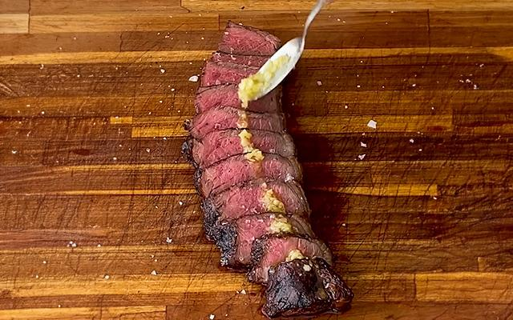

Picanha na Manteiga de Alho

Um clássico da nossa culinária, a picanha é um prato que possui algumas
variações, mas todas bem deliciosas! Esta receita de Picanha na Manteiga de
Alho que trazemos pra você é bem tradicional. Confira como fazer e capriche no
seu almoço!
Ingredientes
- picanha - 1 peça de picanha (cerca de 1 kg)
- manteiga - 3 colheres de manteiga
- alho - 3 dentes de alho picado
- sal grosso - Sal grosso a gosto
Modo de preparo
-
Tempere a picanha com sal grosso e leve à grelha com a gordura virada para
cima.
-
Enquanto assa, derreta a manteiga com o alho e pincele sobre a carne
periodicamente.
-
Asse por aproximadamente 30 a 40 minutos, virando uma vez na metade do
tempo.
- Fatie e sirva regando com manteiga de alho.
Acompanhamentos
- Arroz branco.